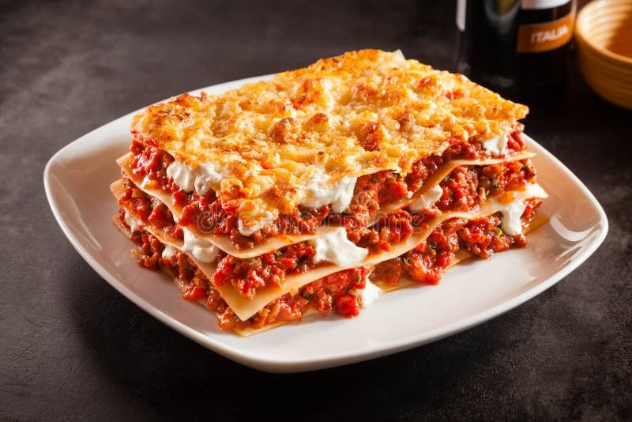

Home
Lasagna

Description
Lasagna is a classic Italian
comfort food featuring layers
of tender pasta sheets, rich and
savory meat sauce, creamy béchamel, and melted cheese. Each bite combines the flavors of slow-cooked tomatoes, aromatic herbs, and perfectly seasoned ground meat, all baked to golden perfection. This hearty dish is perfect for family gatherings, special occasions, or whenever you crave a warm, satisfying meal.
Ingredients
- 12 lasagna noodles
- 1 pound ground beef
- 2 cups ricotta cheese
- 2 cups shredded mozzarella cheese
- 1 cup grated Parmesan cheese
- 2 cups marinara sauce
- 1 egg
- 2 tablespoons chopped fresh basil
- Salt and pepper to taste
- Olive oil for cooking
Steps
- Preheat the oven to 375°F (190°C).
- Cook the lasagna noodles according to package instructions; drain and set aside.
- In a skillet, heat olive oil over medium heat. Add ground beef, season with salt and pepper, and cook until browned.
- Add marinara sauce to the skillet with the beef and simmer for 10 minutes.
- In a bowl, mix ricotta cheese, egg, basil, salt, and pepper until well combined.
- Spread a layer of meat sauce on the bottom of a baking dish.
- Layer 3 lasagna noodles over the sauce, then spread half of the ricotta mixture over the noodles.
- Add a layer of mozzarella cheese and sprinkle with Parmesan cheese.
- Repeat layers (sauce, noodles, ricotta, mozzarella, Parmesan) until all ingredients are used, finishing with a layer of meat sauce and mozzarella on top.
- Cover with aluminum foil and bake for 25 minutes.
- Remove foil and bake for an additional 15 minutes or until cheese is bubbly and golden.
- Let it cool for 10 minutes before serving.